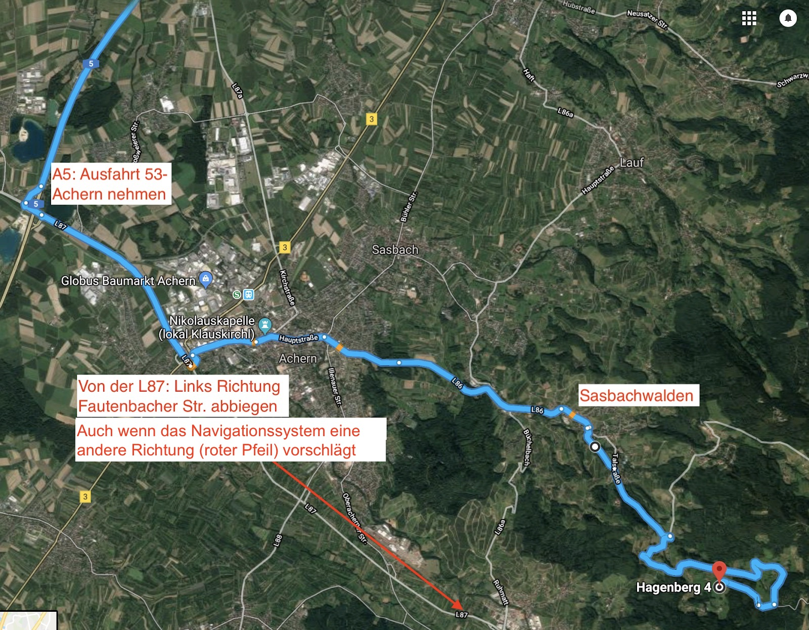

Oft leiten die Navis einen über Kappelrodeck, das würd ich aber NICHT empfehlen, da man somit mitten durch den Wald fahren müsste und der Zustand der Straße in diesem Bereich nicht der Beste ist.
Nehmt deshalb lieber die Route über Sasbachwalden: Also nach Achern reinfahren und einmal durch die Innenstadt, spätestens jetzt sollte das Navi umgeschalten haben und die richtige Wegführung, wie auf dem Bild, anzeigen.
